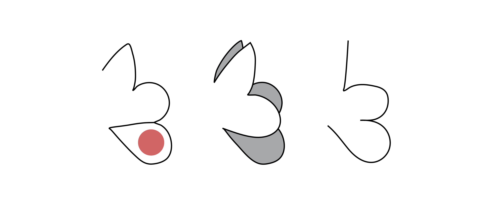

Indications
- Local nasal reconstruction for
- Nasal tip and ala defects, ideally more than 1 cm away from the nostril
- Circular defects 0.5 cm to 1 cm in size
- Defects whose depth extends into and past the level of the subcutaneous fat
- Although traditionally described for nasal recon, many have moved away from using it, as it is easy (especially in the tip) to cause unsightly upturning tip or alar rim elevation.
- Useful in patients with thin skin and ample skin laxity along the nasal sidewall
- Can also be used for reconstruction on the cheek and neck 